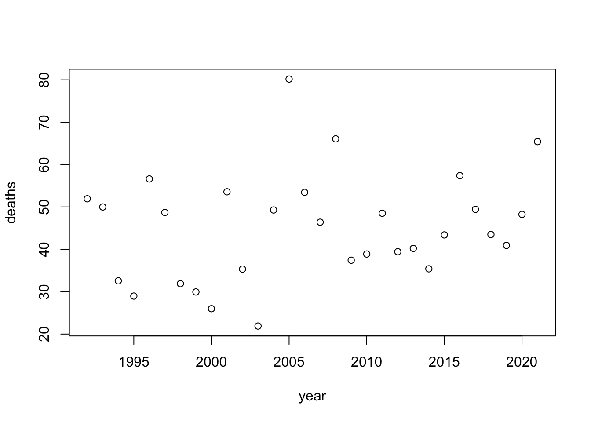
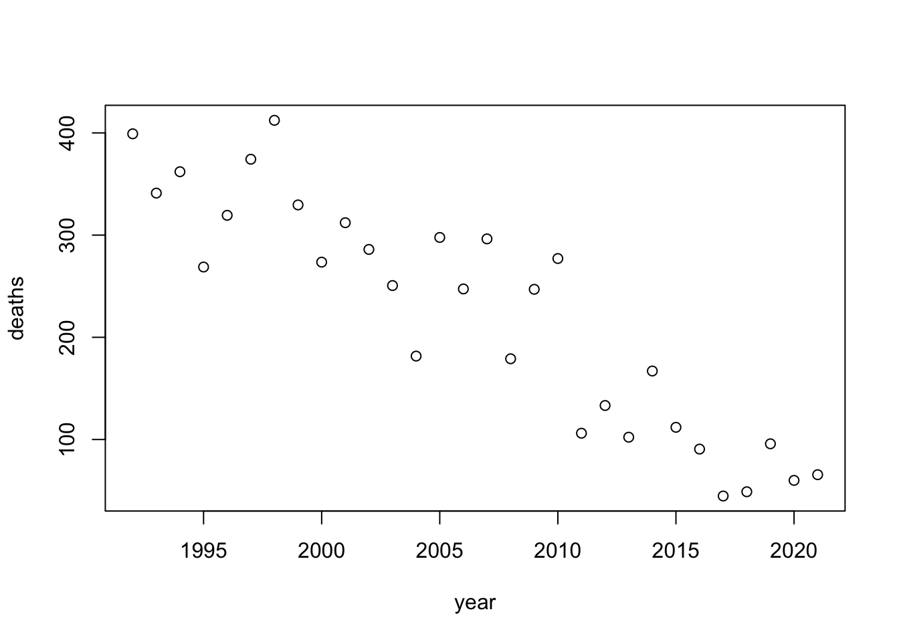
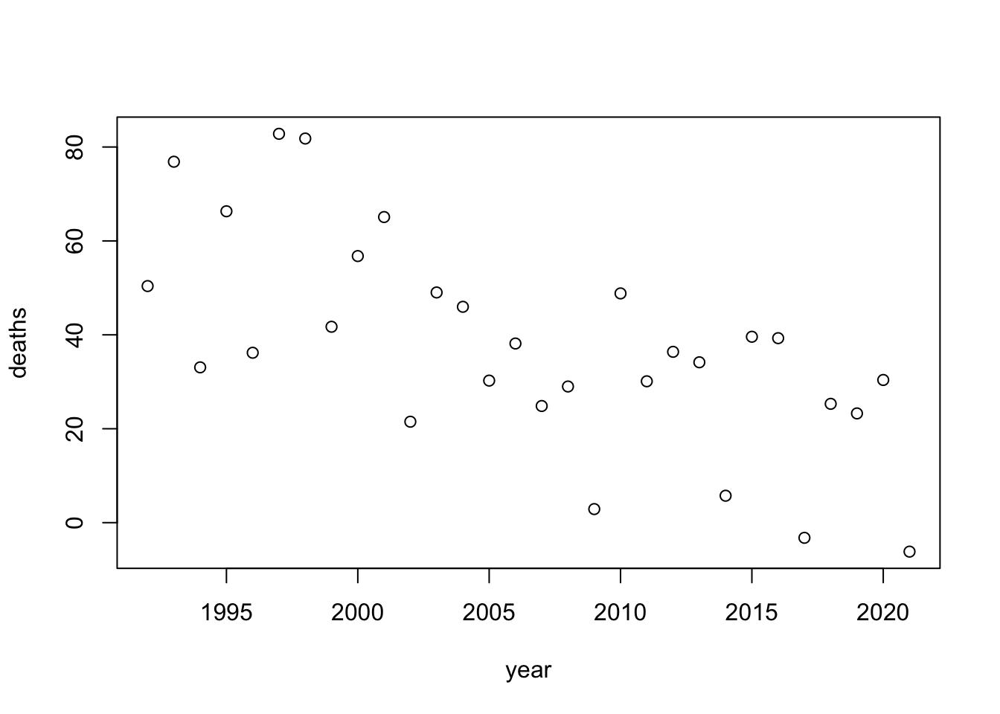

Homework 6
Audrey Commerford
2025-02-22
Creating Fake Data Sets To Explore Hypotheses
I recently read a new review of the decrease in cervical cancer following introduction of the HPV vaccine. I am loosely basing my model off of their findings. However, this model does not account for the difference before and after introduction, so it is really just a model of change over time without accounting for vaccination.
I started by establishing my explanatory and response variables.
# establish explanatory variable: years before and after the introduction of the HPV vaccine
year <- 1992:2021
# establish response variable: number of cervical cancer deaths
deaths <- rnorm(30, mean=39, sd=15)I first created a simple model of years vs cervical cancer deaths.
data_frame <- data.frame(year, deaths)
str(data_frame)## 'data.frame': 30 obs. of 2 variables:
## $ year : int 1992 1993 1994 1995 1996 1997 1998 1999 2000 2001 ...
## $ deaths: num 36.8 60.3 33.7 67 34.6 ...To analyze this data, I used a linear model. Since it is randomly generated and distributed, there is little to no association between year and mortality.
# fitting a linear model
model <- lm(deaths~year)
summary(model)##
## Call:
## lm(formula = deaths ~ year)
##
## Residuals:
## Min 1Q Median 3Q Max
## -26.737 -11.393 -0.457 7.269 36.144
##
## Coefficients:
## Estimate Std. Error t value Pr(>|t|)
## (Intercept) 805.7079 641.4892 1.256 0.219
## year -0.3802 0.3197 -1.189 0.244
##
## Residual standard error: 15.16 on 28 degrees of freedom
## Multiple R-squared: 0.04808, Adjusted R-squared: 0.01409
## F-statistic: 1.414 on 1 and 28 DF, p-value: 0.2443# visualize dataset
plot(year, deaths)
To test the effect of different sample sizes, I adjusted the total number of deaths that occurred over the study period. When the overall number of deaths is greater, the correlation is much stronger.
year <- 1992:2021
# testing a large sample size
total_deaths_large <- seq(from = 400, to = 50, length.out = 30)
for(i in 1:30) {
large_sample_size <- data.frame(year = year, deaths = total_deaths_large)
plot(large_sample_size[,1], large_sample_size[,2], xlab = "year", ylab = "deaths")
}# testing a small sample size
total_deaths_small <- seq(from = 100, to = 10, length.out = 30)
for(i in 1:30) {
small_sample_size <- data.frame(year = year, deaths = total_deaths_small)
plot(small_sample_size[,1], small_sample_size[,2], xlab = "year", ylab = "deaths", ylim = c(0, 400))
}To test different effect sizes, I added noise using random normal values. When the standard deviation of the noise variable is low, the effect is very strong and the plot is still very linear. When the standard deviation of the noise variable is high, the variation is much stronger and the effect is less distinct.
year <- 1992:2021
total_deaths <- seq(from = 400, to = 50, length.out = 30)
noise_small <- rnorm(30, mean = 0, sd = 5)
# testing a strong effect size (minimal noise)
for(i in 1:30) {
large_effect_size <- data.frame(year = year, deaths = total_deaths + noise_small)
plot(large_effect_size[,1], large_effect_size[,2], xlab = "year", ylab = "deaths")
}
# testing a weak effect size (a lot of noise)
noise_large <- rnorm(30, mean = 0, sd= 50)
for(i in 1:30) {
small_effect_size <- data.frame(year = year, deaths = total_deaths + noise_large)
plot(small_effect_size[,1], small_effect_size[,2], xlab = "year", ylab = "deaths")
}
In the study, the actual standard deviation was about 15 and there were only 55 deaths in the first year.
year <- 1992:2021
sample <- seq(from = 55, to = 12, length.out = 30)
noise <- rnorm(30, mean = 0, sd = 15)
results <- data.frame(year = year, deaths = rep(NA, 30))
for(i in 1:30) {
results[,2] <- sample + noise
plot(results[,1], results[,2], xlab = "year", ylab = "deaths")
}
model <- lm(deaths~year, data=results)
summary(model)##
## Call:
## lm(formula = deaths ~ year, data = results)
##
## Residuals:
## Min 1Q Median 3Q Max
## -24.9903 -11.5726 -0.3471 12.3050 26.2679
##
## Coefficients:
## Estimate Std. Error t value Pr(>|t|)
## (Intercept) 3742.8714 654.9302 5.715 3.95e-06 ***
## year -1.8496 0.3264 -5.667 4.50e-06 ***
## ---
## Signif. codes: 0 '***' 0.001 '**' 0.01 '*' 0.05 '.' 0.1 ' ' 1
##
## Residual standard error: 15.47 on 28 degrees of freedom
## Multiple R-squared: 0.5342, Adjusted R-squared: 0.5176
## F-statistic: 32.11 on 1 and 28 DF, p-value: 4.505e-06